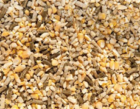

产品中心
ABOUT JIANLITAI
业务布局
饲料产品
技术交流
您的当前位置：网站首页 - 产品中心 - 饲料产品
- 
-
多菌甾康
主要以麦麸，葡萄皮柏等为底物通过微生物复合菌发酵后成为产品，有30%水分。主要用于奶牛，畜禽类动物养殖，可做为其日粮中的辅料添加，其主要作用是提高日粮的转化效率，提升养殖动物的免疫能力，降低动物体因采食物造成的胃肠道疾病，降低圈舍氨气浓度，提高动物日采食量，主要用户为养殖企业，公司多菌甾康品牌共有一个产品供市场销售 ，即：通用型A3010型...查看更多+
-
多菌甾康
主要以麦麸，葡萄皮柏等为底物通过微生物复合菌发酵后成为产品，有30%水分。主要用于奶牛，畜禽类动物养殖，可做为其日粮中的辅料添加，其主要作用是提高日粮的转化效率，提升养殖动物的免疫能力，降低动物体因采食物造成的胃肠道疾病，降低圈舍氨气浓度，提高动物日采食量，主要用户为养殖企业，公司多菌甾康品牌共有一个产品供市场销售 ，即：通用型A3010型...查看更多+
-
多菌甾康
主要以麦麸，葡萄皮柏等为底物通过微生物复合菌发酵后成为产品，有30%水分。主要用于奶牛，畜禽类动物养殖，可做为其日粮中的辅料添加，其主要作用是提高日粮的转化效率，提升养殖动物的免疫能力，降低动物体因采食物造成的胃肠道疾病，降低圈舍氨气浓度，提高动物日采食量，主要用户为养殖企业，公司多菌甾康品牌共有一个产品供市场销售 ，即：通用型A3010型...查看更多+